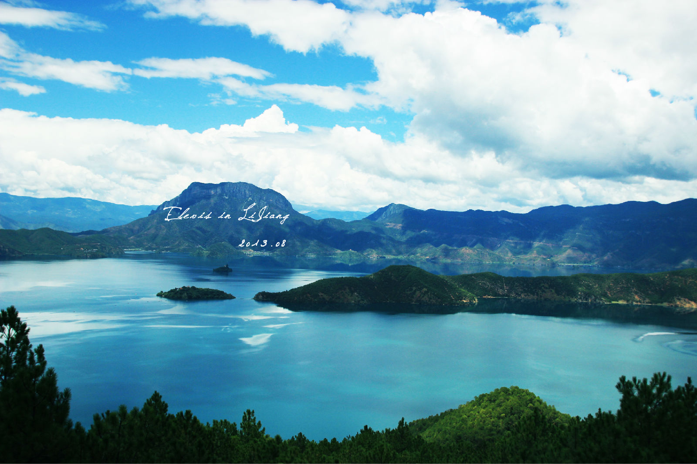
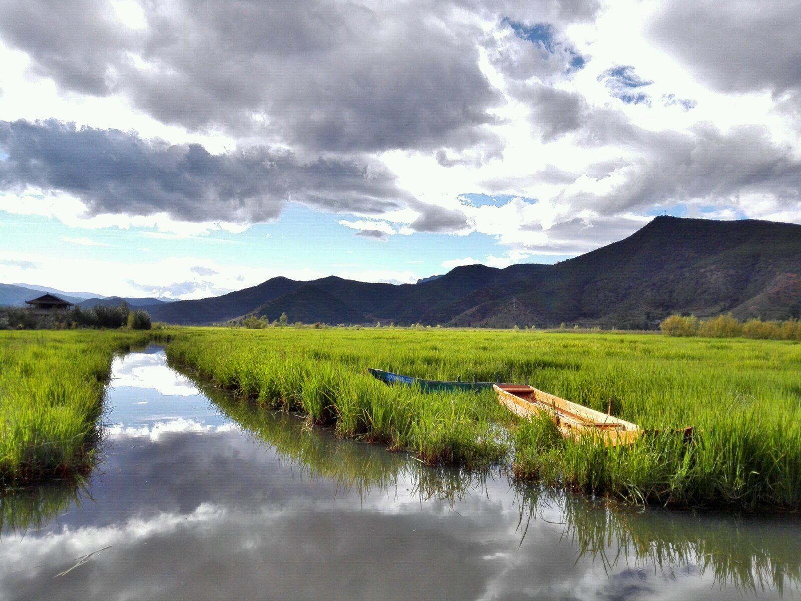
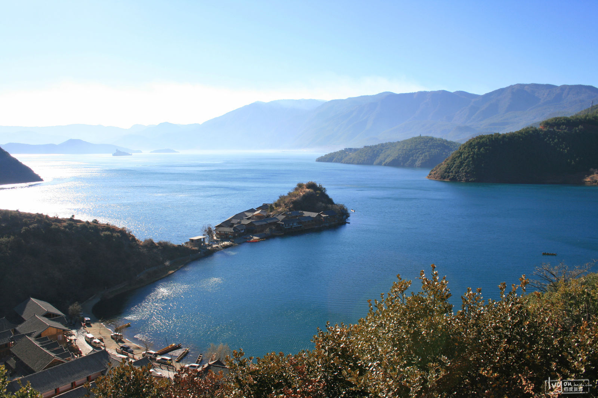
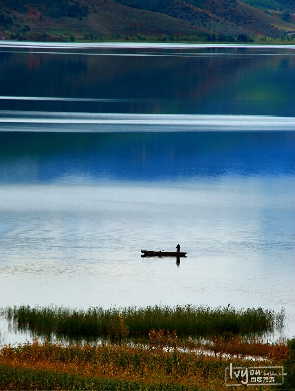

泸沽湖
《七绝▪游泸沽湖》
神山仙岛画湖中，日照三时景不同。
渔曲槽船闲唱渡，素裙飘处鹤翔空。
格姆女神山海拔3754.7米，是泸沽湖四周最高的山峰。从达祖纳西村后的转山古道，经柏香林，可到顶端女神庙、女神洞。在摩梭神话传说中，此山是格姆女神的化身。泸沽湖形如半月，只有登临女神山才可窥见泸沽湖全景。

如同镶嵌在泸沽湖东面的翡翠，草海内芦苇如墙，水路错综，摩梭姑娘划着猪槽船出没其中，如仙境一般。

泸沽湖湖岸曲折多湾，湖中各岛形态各异，其中尼喜岛、里务比岛和奈终普岛并称为泸沽三岛。

在云南省的湖泊中，泸沽湖深度仅次于抚仙湖，居第二位。整个湖泊，状若马蹄，水质纯净。
